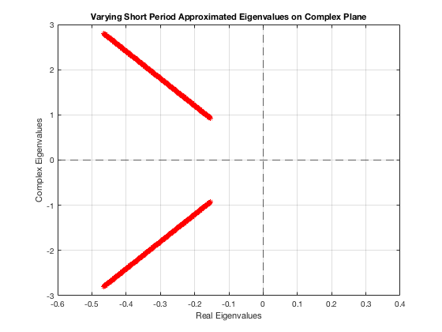
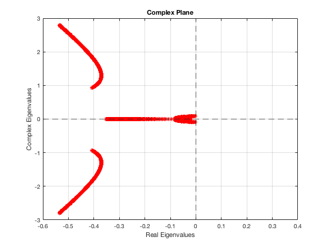
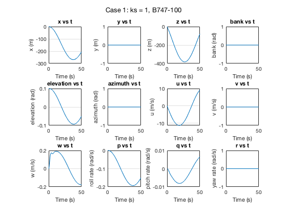
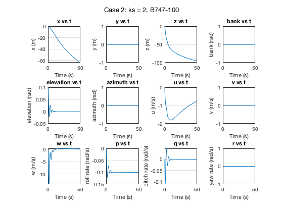

Contents
ASEN 3128 - Assignment 08 - Main
Dimensional Derivatives / B747-100 dynamics
Author: Margaux McFarland Collaborators: Date: 10/31/19
close all; clear all; clc;
givens for B747-100 case II
zeta = deg2rad(-6.8); %radians, angle from stability frame W = 2831737.87; %N, weight g = 9.81; %N, gravity m = W/g; %kg, mass theta_0 = 0; %radians, trim elevation V_e = 157.886; %m/s, airspeed u0 = V_e; %m/s, x-component is the same as airspeed in stability frame %moment of inertias Ix = 2.47e7; %kg*m^2 Iy = 4.49e7; Iz = 6.74e7; Izx = 1.32e6; cd = 0.04; %coefficient of drag S = 510.9667; %planform area, m^2 c = 8.3241; %chord length, m rho = 0.6531; %air density, kg/m^3 (std atmosphere 20,000 ft %body frame stability derivatives Xu = -712.9; Xw = 22571.14; Xq = 0; Xwdot = 0; Xdeltae = 3.994*10^4; Zu = -19592.797; Zw = -124988.03; Zq = -1.263*10^5; Zwdot = 4531.747 ; Zdeltae = -3.341*10^5; Mu = 36646.48; Mw = -252213.39; Mq = -1.394*10^7; Mwdot = -18547.34; Mdeltae = -3.608*10^7; %stability frame stability derivatives Xu_s = Xu * cos(zeta)^2 - ((Xw + Zu) * sin(zeta) * cos(zeta))... + (Zw * sin(zeta)^2); Xw_s = Xw * cos(zeta)^2 + ((Xu - Zw) * sin(zeta) * cos(zeta))... - Zu * sin(zeta)^2; Xq_s = Xq * cos(zeta) - (Zq * sin(zeta)); Xwdot_s = -Zwdot * sin(zeta) * cos(zeta); Zu_s = Zu * cos(zeta)^2 - ((Zw - Xu) * sin(zeta) * cos(zeta))... - (Xw * sin(zeta)^2); Zw_s = Zw*(cos(zeta))^2 + ((Zu + Xw)*sin(zeta)*cos(zeta)) + (Xu*(sin(zeta))^2); Zq_s = Zq*cos(zeta) + (Xq*sin(zeta)); Zwdot_s =Zwdot*(cos(zeta))^2; Mu_s = Mu*cos(zeta) - (Mw*sin(zeta)); Mw_s = Mw*cos(zeta) + (Mu*sin(zeta)); Mq_s = Mq; Mwdot_s = Mwdot*cos(zeta);
calculate A matrix
A11 = Xu_s/m; A12 = Xw_s/m; A13 = 0; A14 = -g*cos(theta_0); A21 = Zu_s/(m-Zwdot_s); A22 = Zw_s/(m-Zwdot_s); A23 = (Zq_s + (m*u0))/(m-Zwdot_s); A24 = (-m*g*sin(theta_0))/(m-Zwdot_s); A31 = (1/Iy)*(Mu_s + ((Mwdot_s*Zu_s)/(m-Zwdot_s))); A32 = (1/Iy)*(Mw_s + ((Mwdot_s*Zw_s)/(m-Zwdot_s))); A33 = (1/Iy)*(Mq_s + ((Mwdot_s*(Zq_s + (m*u0)))/(m-Zwdot_s))); A34 = -(Mwdot_s*m*g*sin(theta_0))/(Iy*(m-Zwdot_s)); A41 = 0; A42 = 0; A43 = 1; A44 = 0; %A matrix A = [A11 A12 A13 A14;... A21 A22 A23 A24;... A31 A32 A33 A34;... A41 A42 A43 A44]; %eigenvectors and eigenvalues of A matrix [V, D] = eig(A)
V = 0.0309 + 0.0119i 0.0309 - 0.0119i -0.9998 + 0.0000i -0.9998 + 0.0000i 0.9994 + 0.0000i 0.9994 + 0.0000i 0.0140 + 0.0089i 0.0140 - 0.0089i 0.0002 + 0.0059i 0.0002 - 0.0059i -0.0007 + 0.0000i -0.0007 - 0.0000i 0.0052 - 0.0025i 0.0052 + 0.0025i 0.0006 + 0.0086i 0.0006 - 0.0086i D = -0.4071 + 0.9358i 0.0000 + 0.0000i 0.0000 + 0.0000i 0.0000 + 0.0000i 0.0000 + 0.0000i -0.4071 - 0.9358i 0.0000 + 0.0000i 0.0000 + 0.0000i 0.0000 + 0.0000i 0.0000 + 0.0000i -0.0020 + 0.0839i 0.0000 + 0.0000i 0.0000 + 0.0000i 0.0000 + 0.0000i 0.0000 + 0.0000i -0.0020 - 0.0839i
Problem 1
%short period approx - original A_short = [Mq_s/Iy (u0*Mw_s)/Iy ; 1 0]; eig_short = eig(A_short); %calculate natural frequency and damping ratio wn_short = sqrt(real(eig_short(1))^2 + imag(eig_short(1))^2); %rad/s damp_ratio_short = -real(eig_short(1))/wn_short %short period approx - quadrouple Mq and double Mw for doubling l_t A_short_lt = [4*Mq_s/Iy (u0*2*Mw_s)/Iy ; 1 0]; eig_short_lt = eig(A_short_lt); %calculate natural frequency and damping ratio wn_short_lt = sqrt(real(eig_short_lt(1))^2 + imag(eig_short_lt(1))^2); %rad/s damp_ratio_short_lt = -real(eig_short_lt(1))/wn_short_lt %short period approx - double Mq and double Mw for doubling S_t A_short_St = [2*Mq_s/Iy (u0*2*Mw_s)/Iy ; 1 0]; eig_short_St = eig(A_short_St); %calculate natural frequency and damping ratio wn_short_St = sqrt(real(eig_short_St(1))^2 + imag(eig_short_St(1))^2); %rad/s damp_ratio_short_St = -real(eig_short_St(1))/wn_short_St
damp_ratio_short =
0.1640
damp_ratio_short_lt =
0.4639
damp_ratio_short_St =
0.2319
Problem 2
%non-dimensional control derivaties for elevator C_xe = -3.818e-6; C_ze = -0.3648; C_me = -1.444; %dimensionalize control derivatives Xe = C_xe*(0.5)*rho*u0^2*S; Ze = C_ze*(0.5)*rho*u0^2*S; Me = C_me*(0.5)*rho*u0^2*S*c; %B matrix B = [Xe/m; Ze/(m-Zwdot_s);((Me/Iy)-((Mwdot_s*Ze)/(Iy*(m-Zwdot_s)))); 0];
Problem 3 - a
%calculate eigenvalue eig_approx = Mq_s/(2*Iy) + sqrt(Mq_s^2 + 4*Iy*u0*Mw_s)/(2*Iy); %calculate natural frequency wn = sqrt(real(eig_approx)^2 + imag(eig_approx)^2); %rad/s %calculate damping ratio damp_ratio = -real(eig_approx)/wn; %variable scale factor ks = 1:0.01:3; %short period approx - increasing pitch stiffness, but constant damper(Mq) for i = 1:length(ks) % get gain values (K1 and K2) for each ks K1(i) = (Iy/Me)*(ks(i)*2*damp_ratio*wn + (Mq_s/Iy)); K2(i) = (Iy/Me)*(ks(i)^2*wn^2 + ((u0*Mw_s)/Iy)); %A matrix with controls mat = [(Mq_s/Iy)-(K1(i)*Me/Iy) (u0*Mw_s/Iy)-(K2(i)*Me/Iy); 1 0]; %calculate eigenvalues eigvals = eig(mat); real_1(i) = real(eigvals(1)); %real part imag_1(i) = imag(eigvals(1)); %imaginary part imag_2(i) = imag(eigvals(2)); %imaginary part end %plot on complex plane figure(1) plot(real_1,imag_1,'*r'); hold on plot(real_1,imag_2,'*r'); grid on title('Varying Short Period Approximated Eigenvalues on Complex Plane'); xlabel('Real Eigenvalues'); ylabel('Complex Eigenvalues'); yline(0,'--'); xline(0,'--'); xlim([-0.6 0.4])
Problem 3 - b
%full longitudinal dynamics %loop through gains for i = 1:length(K1) %K matrix K = [0 0 K1(i) K2(i)]; eig_full(:,i) = eig(A-B*K); %4 eigenvalues (2 short period/2 phugoid) end %plot figure(2) plot(real(eig_full(1,:)),imag(eig_full(1,:)), '*r'); hold on plot(real(eig_full(2,:)),imag(eig_full(2,:)), '*r'); hold on plot(real(eig_full(3,:)),imag(eig_full(3,:)), '*r'); hold on plot(real(eig_full(4,:)),imag(eig_full(4,:)), '*r'); title('Complex Plane'); grid on xlabel('Real Eigenvalues'); ylabel('Complex Eigenvalues'); yline(0,'--'); xline(0,'--'); xlim([-0.6 0.4])
part c
%simulate closed loop behavior %case 1- ks = 1 index = find(ks == 1, 1); %state_vec = [x; y; z; phi; theta; xi; u; v; w; p; q; r]; initials = [0 0 0 0 0.1 0 0 0 0 0 0 0]; t_span = [0 50]; %seconds [t, state_vec] = ode45(@(t,state_vec) g_fun(t,state_vec, A, B, K1(index), K2(index)),t_span,initials); %plot figure(3) sgtitle('Case 1: ks = 1, B747-100'); %label and title strings for each state ylabel_str = ["x (m)", "y (m)", "z (m)", "bank (rad)","elevation (rad)",... "azimuth (rad)", "u (m/s)", "v (m/s)","w (m/s)","roll rate (rad/s)",... "pitch rate (rad/s)", "yaw rate (rad/s)"]; title_str = ["x vs t", "y vs t", "z vs t", "bank vs t", "elevation vs t",... "azimuth vs t","u vs t", "v vs t", "w vs t", "p vs t", "q vs t", "r vs t"]; for j = 1:12 %loop through number of states and plot each subplot(3, 4, j); plot(t, state_vec(:,j)); xlabel('Time (s)'); ylabel(ylabel_str(:,j)); title(title_str(:,j)); grid on hold all; end %case 1- ks = 1 index = find(ks == 2, 1); %state_vec = [x; y; z; phi; theta; xi; u; v; w; p; q; r]; initials = [0 0 0 0 0.1 0 0 0 0 0 0 0]; t_span = [0 50]; %seconds [t, state_vec] = ode45(@(t,state_vec) g_fun(t,state_vec, A, B, K1(index), K2(index)),t_span,initials); %plot figure(4) sgtitle('Case 2: ks = 2, B747-100'); for j = 1:12 %loop through number of states and plot each subplot(3, 4, j); plot(t, state_vec(:,j)); xlabel('Time (s)'); ylabel(ylabel_str(:,j)); title(title_str(:,j)); grid on hold all; end 
Functions Called
The following functions were built and called as apart of this assignment.
function ddt = g_fun(t,state_vec, A, B, K1, K2) %% ode function for linearized longitudinal dynamics for B747-100, w/ controls %unpack state vector theta_dev = state_vec(5, 1); %elevation deviation, rad u_dev = state_vec(7, 1); %x velocity deviation, m/s w_dev = state_vec(9, 1); %z velocity deviation, m/s q_dev = state_vec(11, 1);% roll rate devitaion, rad/s e_dev = -K2*theta_dev - (K1*q_dev); %elevator control deviation %combine states into y matrix y = [u_dev;w_dev;q_dev;theta_dev]; U = e_dev; ydot = A*y + B*U; %givens u0 = 157.886; %m/s, x-component is the same as airspeed in stability frame theta0 = 0; %radians, trim elevation dx_dev = u_dev*cos(theta0) + w_dev*sin(theta0) - u0*theta_dev*sin(theta0); dz_dev = u_dev*cos(theta0) + w_dev*cos(theta0) - u0*theta_dev*cos(theta0); ddt = [dx_dev; 0; dz_dev; 0; q_dev; 0; ydot(1); 0; ydot(2); ydot(4); ydot(3); 0]; end